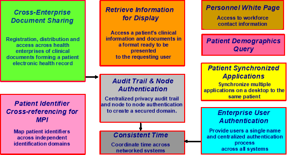

IHE IT Infrastructure (ITI)
Technical Framework
Revision 16.0 – Final Text
IHE IT Infrastructure Integration Profiles (Figure 2-1), offer a common language that healthcare professionals and vendors can use to discuss integration needs of healthcare enterprises and the integration capabilities of information systems in precise terms. Integration Profiles specify implementations of standards that are designed to meet identified clinical needs. They enable users and vendors to state which IHE capabilities they require or provide, by reference to the detailed specifications of the IHE IT Infrastructure Technical Framework.
Integration profiles are defined in terms of IHE actors and transactions. Actors (see ITI TF-1: Appendix A) are information systems or components of information systems that produce, manage, or act on information associated with clinical and operational activities in the enterprise. Transactions (see ITI TF-1: Appendix B) are interactions between actors that communicate the required information through standards-based messages.
Vendor products support an Integration Profile by implementing the appropriate actor(s) and transactions. A given product may implement more than one actor and more than one integration profile.
Figure 2-1: IHE IT Infrastructure Integration Profiles
Dependencies among IHE Integration Profiles exist when implementation of one integration profile is a prerequisite for achieving the functionality defined in another integration profile. Figure 2-1 provides a graphical view of the dependencies among IHE IT Infrastructure Integration Profiles. The arrows in the figure point from a given integration profile to the integration profile(s) upon which it depends. Table 2-1 defines these dependencies in tabular form.
Some dependencies require that an actor supporting one profile be grouped with one or more actors supporting other integration profiles. For example, Enterprise User Authentication (EUA) requires that different participating actors be grouped with the Time Client that participates in the Consistent Time (CT) Integration Profile. The dependency exists because EUA actors must refer to consistent time in order to function properly.
Table 2-1: Integration Profiles Dependencies
|
Integration Profile |
Depends on |
Dependency Type |
Purpose |
|
Retrieve Information for Display Integration (RID) |
None |
None |
- |
|
Enterprise User Authentication (EUA) |
Consistent Time |
Each actor implementing EUA shall be grouped with the Time Client. |
Required to manage expirations of authentication tickets |
|
Patient Identifier Cross-referencing (PIX) |
Consistent Time |
Each actor implementing PIX shall be grouped with the Time Client. |
Required to manage and resolve conflicts in multiple updates. |
|
Patient Synchronized Applications (PSA) |
None |
None |
- |
|
Consistent Time (CT) |
None |
None |
- |
|
Patient Demographics Query (PDQ) |
None |
None |
- |
|
Personnel White Pages (PWP) |
None |
None |
- |
|
Audit Trail and Node Authentication (ATNA) |
Consistent Time |
An ATNA Secure Node shall be grouped with the Time Client. |
Required for consistent time in audit logs. |
|
Cross-Enterprise Document Sharing (XDS) |
Audit Trail and Node Authentication |
Each XDS Actor shall be grouped with the ATNA Secure Node or Secure Application. |
Required to manage audit trail of exported PHI, node authentication and transport encryption. |
|
Cross-Enterprise Document Sharing (XDS) |
Consistent Time |
Each XDS Actor shall be grouped with the Time Client. |
To ensure consistency among document and submission set dates. |
|
Cross-Enterprise User Assertion (XUA) |
None |
None |
|
|
Patient Administration Management (PAM) |
None |
None |
- |
|
Cross-Enterprise Document Media Interchange (XDM) |
Audit Trail and Node Authentication |
Each XDM Actor shall be grouped with Secure Node or Secure Application. |
Requires audit trails. |
|
Cross-Enterprise Document Media Interchange (XDM) |
Any IHE Content Profile |
The Portable Media Importer shall be grouped with a Content Consumer of one or more IHE Content Profile |
Enables some form of processing of imported medical data. |
|
Basic Patient Privacy Consent (BPPC) |
XDS, XDM or XDR |
The BPPC Content Creator shall be grouped with an XDS or XDR Document Source, or an XDM Portable Media Creator. The BPPC Content Consumer shall be grouped with an XDS Document Consumer, or an XDR Document Recipient, or an XDM Portable Media Importer. |
The content of a Basic Patient Privacy Consent Acknowledgement document is intended for use in XDS, XDR and XDM. |
|
Basic Patient Privacy Consent (BPPC) |
Cross Enterprise Sharing of Scanned Documents |
The BPPC Content Consumer shall be grouped with the XDS-SD Content Consumer. |
Enables capturing of wet signatures on patients' consent documents. |
|
Cross Enterprise Sharing of Scanned Documents (XDS-SD) |
XDS, XDM or XDR |
The XDS-SD Content Creator shall be grouped with an XDS or XDR Document Source, or an XDM Portable Media Creator. The XDS-SD Content Consumer shall be grouped with an XDS Document Consumer, or an XDR Document Recipient, or an XDM Portable Media Importer. |
The content of this profile is intended for use in XDS, XDR and XDM. |
|
Cross-Enterprise Document Reliable Interchange (XDR) |
ATNA |
Each XDR Actor shall be grouped with Secure Node or Secure Application. |
Requires secure communication and audit trails. |
|
Multi-Patient Queries (MPQ) |
Audit Trail and Node Authentication |
Each Document Registry Actor and each Document Consumer shall be grouped with a Secure Node or a Secure Application. |
Required to manage audit trail of exported PHI, node authentication and transport encryption |
|
Multi-Patient Queries (MPQ) |
Consistent Time |
Each Document Registry Actor and each Document Consumer shall be grouped with the Time Client. |
To ensure consistency among document and submission set dates |
|
Patient Identifier Cross-Referencing HL7 V3 (PIX v3) |
Consistent Time |
Each actor implementing PIXv3 shall be grouped with the Time Client. |
Required to manage and resolve conflicts in multiple updates |
|
Patient Demographics Query HL7 V3 (PDQv3) |
None |
None |
|
|
Cross-Community Access (XCA) |
Audit Trail and Node Authentication |
Each XCA Actor shall be grouped with Secure Node or Secure Application. |
Required to manage audit trail of exported PHI, node authentication and transport encryption. |
|
Cross-Community Access (XCA) |
Consistent Time |
Each XCA Actor shall be grouped with the Time Client. |
To ensure consistency among document and submission set dates. |
|
Retrieve Form for Data Capture (RFD) |
None |
None |
- |
|
Sharing Value Sets (SVS) |
Audit Trail and Node Authentication |
The Value Set Repository shall be grouped with a Secure Node/Secure Application. |
Required to manage audit trail of Value Sets sharing and node authentication. |
|
Cross-Community Patient Discovery (XCPD) |
Audit Trail and Node Authentication |
Each XCPD Actor shall be grouped with Secure Node or Secure Application. |
Required to manage audit trail of exported PHI, node authentication and transport security. |
|
Document Metadata Subscription (DSUB) |
Consistent Time |
Each DSUB actor shall be grouped with the Time Client. |
Required due to ATNA grouping. |
To support a dependent profile, an actor must implement all required transactions in the prerequisite profiles in addition to those in the dependent profile. In some cases, the prerequisite is that the actor selects any one of a given set of profiles.
In this document, each IHE Integration Profile is defined by:
These requirements are presented in the form of a table of transactions required for each actor supporting the Integration Profile. Actors supporting multiple Integration Profiles are required to support all the required transactions of each Integration Profile supported. When an Integration Profile depends upon another Integration Profile, the transactions required for the dependent Integration Profile have not been included in the table.
Note that IHE Integration Profiles are not statements of conformance to standards, and IHE is not a certifying body. Users should continue to request that vendors provide statements of their conformance to standards issued by relevant standards bodies, such as HL7 and DICOM ® [2] . Standards conformance is a prerequisite for vendors adopting IHE Integration Profiles.
Also note that there are critical requirements for any successful integration project that IHE cannot address. Successfully integrating systems still requires a project plan that minimizes disruptions and describes fail-safe strategies, specific and mutually understood performance expectations, well-defined user interface requirements, clearly identified systems limitations, detailed cost objectives, plans for maintenance and support, etc.
Retrieve Information for Display enables simple and rapid access to patient information for better care. It supports access to existing persistent documents in well-known presentation formats such as CDA ® [3] , PDF, JPEG, etc. It also supports access to specific key patient-centric information such as allergies, current medications, summary of reports, etc. for presentation to a clinician. It complements workflows from within the users’ on-screen workspace or application. By linking it with two other IHE profiles - Enterprise User Authentication and Patient Identifier Cross-referencing, this profile’s reach can extend across organization boundaries within an enterprise. This IHE Integration Profile leverages HTTP, Web Services, IT presentation formats and HL7 CDA Level 1.
Enterprise User Authentication defines a means to establish one name per user that can then be used on all of the devices and software that participate in this integration profile. It greatly facilitates centralized user authentication management and provides users with the convenience and speed of a single sign-on. This profile leverages Kerberos (RFC1510) and the HL7 CCOW standard (user subject). User authentication is a necessary step for most application and data access operations and streamlines workflow for users. Future profiles will deal with other security issues, such as authorization management.
The PIX Profile supports the cross-referencing of patient identifiers from multiple Patient Identifier Domains. These cross-referenced patient identifiers can then be used by “identity consumer” systems to correlate information about a single patient from sources that “know” the patient by different identifiers. This allows a clinician to have more complete view of the patient information.
Patient Synchronized Applications supports viewing data for a single patient among otherwise independent and unlinked applications on a user's workstation. Its implementation reduces the repetitive tasks of selecting the same patient in multiple applications. It also improves patient safety by reducing the chance of medical errors caused by viewing the wrong patient's data. Its ability to work with the Patient Identifier Cross-referencing provides a seamless environment for clinicians and IT staff. This profile leverages the HL7 CCOW standard specifically for patient subject context management.
Consistent Time defines mechanisms to synchronize the time base between multiple actors and computers. Various infrastructure, security, and acquisition profiles require use of a consistent time base on multiple computers. The Consistent Time Profile provides median synchronization error of less than 1 second. Configuration options can provide better synchronization. The Consistent Time Profile specifies the use of the Network Time Protocol (NTP) defined in RFC1305.
Patient Demographics Query provides ways for multiple distributed applications to query a patient information server for a list of patients, based on user-defined search criteria, and retrieve a patient’s demographic (and, optionally, visit or visit-related) information directly into the application.
Audit Trail and Node Authentication establishes the characteristics of a Basic Secure Node:
Note: ATNA security considerations require the use of Secure Nodes. The Secure Application is defined to permit product configurations to indicate that the product is ready for easy integration into a Secure Node environment because it performs all of the security related functions that are directly related to the application function. See ITI TF-1: 9.1.1 for more details.
This profile has been designed so that specific domain frameworks may extend it through an option defined in the domain specific technical framework. Extensions are used to define additional audit event reporting requirements, especially actor specific requirements. The Radiology Audit Trail Option in the IHE Radiology Technical Framework is an example of such an extension.
Cross-Enterprise Document Sharing enables a number of healthcare delivery organizations belonging to an XDS Affinity Domain (e.g., a community of care) to cooperate in the care of a patient by sharing clinical records in the form of documents as they proceed with their patients’ care delivery activities. Federated document repositories and a document registry create a longitudinal record of information about a patient within a given XDS Affinity Domain. This profile is based upon ebXML Registry standards and SOAP. It describes the configuration of an ebXML Registry in sufficient detail to support Cross Enterprise Document Sharing.
Personnel White Pages Profile provides access to basic human workforce user directory information. This information has broad use among many clinical and non-clinical applications across the healthcare enterprise. The information can be used to enhance the clinical workflow (contact information), enhance the user interface (user friendly names and titles), and ensure identity (digital certificates). This Personnel White Pages directory will be related to the User Identity provided by the Enterprise User Authentication (EUA) Integration Profile previously defined by IHE.
Cross-Enterprise User Assertion provides a means to communicate claims about the identity of an authenticated principal (user, application, system...) in transactions that cross-enterprise boundaries. To provide accountability in these cross enterprise transactions there is a need to identify the requesting principal in a way that enables the receiver to make access decisions and generate the proper audit entries. The XUA Profile supports enterprises that have chosen to have their own user directory with their own unique method of authenticating the users, as well as others that may have chosen to use a third party to perform the authentication.
Patient Administration Management establishes the continuity and integrity of patient data, and additional information such as related persons (primary caregiver, guarantor, next of kin, etc.). It coordinates the exchange of patient registration and update information among systems that need to be able to provide current information regarding a patient’s encounter status and location. This profile supports ambulatory and acute care use cases including patient identity feed, admission and discharge, and transfer and encounter management, as well as explicit and precise error reporting and application acknowledgment.
The PAM Profile supports two patient encounter management scenarios: either one single central patient registration system serving the entire institution, or multiple patient registration systems collaborating as peers serving different clinical settings in an institution.
Cross-Enterprise Document Reliable Interchange provides document interchange using a reliable messaging system. This permits direct document interchange between EHRs, PHRs, and other healthcare IT systems in the absence of a document sharing infrastructure such as XDS Registry and Repositories.
Cross-Enterprise Document Media Interchange provides document interchange using a common file and directory structure over several standard media. This permits the patient to use physical media to carry medical documents. This also permits the use of person-to-person email to convey medical documents.
Retrieve Form for Data Capture provides a method for gathering data within a user’s current application to meet the requirements of an external system. RFD supports the retrieval of forms from a form source, display and completion of a form, and return of instance data from the display application to the source application.
Cross-Community Access supports the means to query and retrieve patient relevant medical data held by other communities. A community is defined as a coupling of facilities/enterprises that have agreed to work together using a common set of policies for the purpose of sharing clinical information via an established mechanism. Facilities/enterprises may host any type of healthcare application such as EHR, PHR, etc. A community is identifiable by a globally unique id called the homeCommunityId. Membership of a facility/enterprise in one community does not preclude it from being a member in another community. Such communities may be XDS Affinity Domains which define document sharing using the XDS Profile or any other communities, no matter what their internal sharing structure.
Basic Patient Privacy Consents provides a mechanism to record the patient privacy consent(s), and a method for Content Consumers to use to enforce the privacy consent appropriate to the use. This profile complements XDS by describing a mechanism whereby an XDS Affinity Domain can develop and implement multiple privacy policies, and describes how that mechanism can be integrated with the access control mechanisms supported by the XDS actors (e.g., EHR systems).
A variety of legacy paper, film, electronic and scanner outputted formats are used to store and exchange clinical documents. These formats are not designed for healthcare documentation, and furthermore, do not have a uniform mechanism to store healthcare metadata associated with the documents, including patient identifiers, demographics, encounter, order or service information. The association of structured, healthcare metadata with this kind of document is important to maintain the integrity of the patient health record as managed by the source system. It is necessary to provide a mechanism that allows such source metadata to be stored with the document.
Sharing Value Sets provides a means through which healthcare systems producing or consuming clinical or administrative data, such as diagnostic imaging equipment, laboratory reporting systems, primary care physician office EMR systems, or national healthcare record systems, can receive a common, uniform nomenclature managed centrally. Shared nomenclatures with specific derived value sets are essential to achieving semantic interoperability.
This profile describes transactions for retrieving Value Sets from a Value Set Repository by a Value Set Consumer. A single Value Set Repository can be accessed by many Value Set Consumers, establishing a domain of consistent and uniform set of nomenclatures. It supports automated loading of Value Sets by systems implementing a Value Set Consumer, reducing the burden of manual configuration.
This profile has been retired in favor of use of the Cross-Enterprise Document Workflow (XDW) Profile.
The functionality of the PIXV3 Profile is identical to the PIX Profile described in Section 2.2.3. The differences are in the format of the messages, and in the use of SOAP-based web services. These changes make this profile well suited for use within an existing IT infrastructure for cross-enterprise data access and exchange. The PIXV3 Profile supports the cross-referencing of patient identifiers from multiple Patient Identifier Domains. These cross-referenced patient identifiers can then be used by “identity consumer” systems to correlate information about a single patient from sources that “know” the patient by different identifiers. This allows a clinician to have more complete view of the patient information.
The functionality of the PDQV3 Profile is identical to the PDQ Profile described in Section 2.2.6. The differences are in the format of the messages, and in the use of SOAP-based web services. These changes make this profile well suited for use within an existing IT infrastructure for cross-enterprise data access and exchange. The PDQV3 Profile provides ways for multiple organizations, or multiple distributed applications to query a patient information server for a list of patients, based on user-defined search criteria, and retrieve a patient’s demographic information directly into the application.
Multi-Patient Queries defines a mechanism to enable aggregated queries to a Document Registry based on certain criteria needed by areas related to data analysis, such as quality accreditation of health care practitioners or health care facilities, clinical research trial data collection or population health monitoring.
Document Metadata Subscription describes the use of subscription and notification mechanism for use within an XDS Affinity Domain and across communities. The subscription allows for the matching of metadata during the publication of a new document for a given patient, and results in the delivery of a notification.
Cross-Community Patient Discovery supports the means to locate communities that hold patient relevant health data and the translation of patient identifiers across communities holding the same patient’s data. A community is defined as a group of facilities/enterprises that have agreed to work together using a common set of policies for the purpose of sharing health information within the community via an established mechanism. Facilities/enterprises may host any type of healthcare application such as EHR, PHR, etc. A community is identifiable by a globally unique id called the homeCommunityId. Membership of a facility/enterprise in one community does not preclude it from being a member in another community. Such communities may be XDS Affinity Domains which define document sharing using the XDS Profile or any other communities, no matter what their internal sharing structure.
Future.
Future.
Cross-Enterprise Document Workflow enables participants in a multi-organization environment to manage and track the tasks related to patient-centric workflows as the systems hosting workflow management applications coordinate their activities for the health professionals and patients they support. XDW builds upon the sharing of health documents provided by other IHE profiles such as XDS, adding the means to associate documents conveying clinical facts to a patient-specific workflow. XDW provides a common interoperability infrastructure upon which a wide range of specific workflow definitions may be supported. It is designed to support the complexity of health services delivery with much flexibility to adapt as workflows evolve.
Future.
Future.
Future.
Future.
Future.
Future.
Document Digital Signature defines general-purpose methods of digitally signing of documents for communication and persistence. Among other uses, these methods can be used within an IHE Document Sharing infrastructure (e.g., XDS, XCA, XDM, XDR, and MHD).
Developers have a number of options in implementing IHE actors and transactions in product implementations. The decisions cover three classes of optionality:
All required transactions must be implemented for the profile to be supported (refer to the transaction descriptions in ITI TF-2a and ITI TF-2b).
Implementers should provide a statement describing which IHE actors, IHE integration profiles and options are incorporated in a given product. The recommended form for such a statement is defined in ITI TF-1: Appendix C.
In general, a product implementation may incorporate any single actor or combination of actors. When two or more actors are grouped together, internal communication between actors is assumed to be sufficient to allow the necessary information flow to support their functionality; for example, the Context Manager uses the Patient Identifier Cross-reference Consumer to obtain the necessary patient identifier mapping information from the Patient Identifier Cross-reference Manager. The exact mechanisms of such internal communication are outside the scope of the IHE Technical Framework.
When multiple actors are grouped in a single product implementation, all transactions originating or terminating with each of the supported actors shall be supported (i.e., the IHE transactions shall be offered on an external product interface).
The following examples describe which actors typical systems might be expected to support. This is not intended to be a requirement, but rather to provide illustrative examples.
A departmental system, such as a laboratory information system or a radiology picture archiving and communication system might include an Information Source as well as a Kerberized Server.
A clinical repository might include an Information Source as well as a Kerberized Server and a Patient Identifier Cross-reference Consumer.
A context management server might include a Context Management as well as a Patient Identifier Cross-reference Consumer.